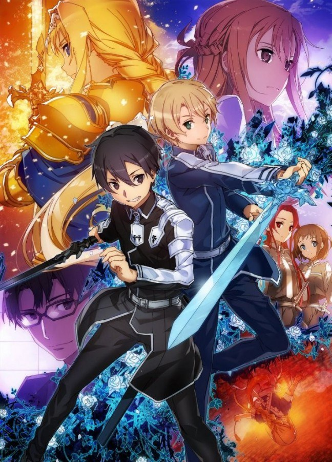

Nouveautées : Bientôt la saison 3 de SAO !
Victime d’une agression par un ancien membre des Laughing Coffins, Kirito se réveille à l’intérieur de l’Underworld, une Réalité Virtuelle dont il était testeur.
Ignorant comment il est arrivé là, et incapable d’entrer en contact avec le monde réel, il va parcourir Underworld pour chercher le moyen d’en sortir.
Il retrouve Eugeo, un jeune Entailleur qu’il avait connu à l’époque, qui recherche toujours Alice, son amie d’enfance, enlevée quelques années plus tôt devant leurs yeux par un des représentants de la plus haute autorité de ce monde : un Chevalier Intègre.
Résolus à élucider tous ces mystères, les deux garçons n’hésitent pas à unir leurs forces. Démarre alors une longue et périlleuse aventure vers la Capitale.
Histoire
Sword Art Online (ソードアート・オンライン, Sōdo Āto Onrain) est dans un premier temps un light novel écrit par Reki Kawahara, également auteur du light novel Accel World, et illustré par Abec. Il est publié par ASCII Media Works depuis avril 2009 et vingts volumes sont sortis en septembre 2017. La version française est éditée par Ofelbe depuis mars 2015.
Il a été adapté en plusieurs mangas mais aussi en série télévisée d'animation de 25 épisodes par le studio A-1 Pictures entre juillet et décembre 2012. Un épisode spécial est sorti le 31 décembre 2013, et une seconde saison animée, de 25 épisodes également, a été diffusée entre juillet et décembre 2014. Un film d'animation intitulé Sword Art Online: Ordinal Scale est sorti en février 2017. Sword Art Online a également eu droit à plusieurs adaptations en jeux vidéo sur consoles PlayStation.
source : fr.sword-art-online.wikia.com
Les animes
Il ya deux deux arcs de sao qui sont sorti sous forme d'anime :
Sword art Online
Gun Gale Online